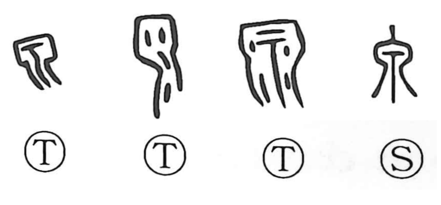

泉

Kun: izumi | On: sen
spring ・ fountainhead ・ spring water
Explanation
泉 pictures water issuing from among rocks and falling from beneath a cliff. The flowing strokes descend from the opening, giving a spring and the water that comes from it. A spring is also the source from which a stream begins.
原 supplies the fuller setting by adding the enclosing cliff; it is the earlier form of 源, ‘source.’ 泉 keeps the water itself at the centre. The character also acquired a use for money, seen in the name 貨泉 on Wang Mang’s coinage, but its basic image remains the spring flowing out from the rock.